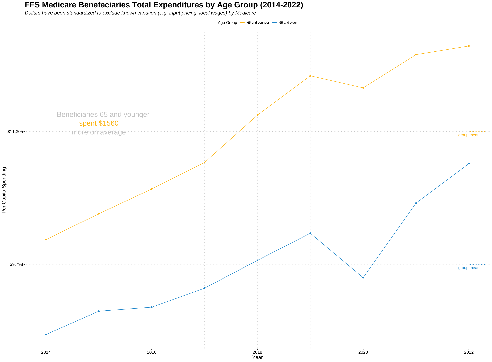
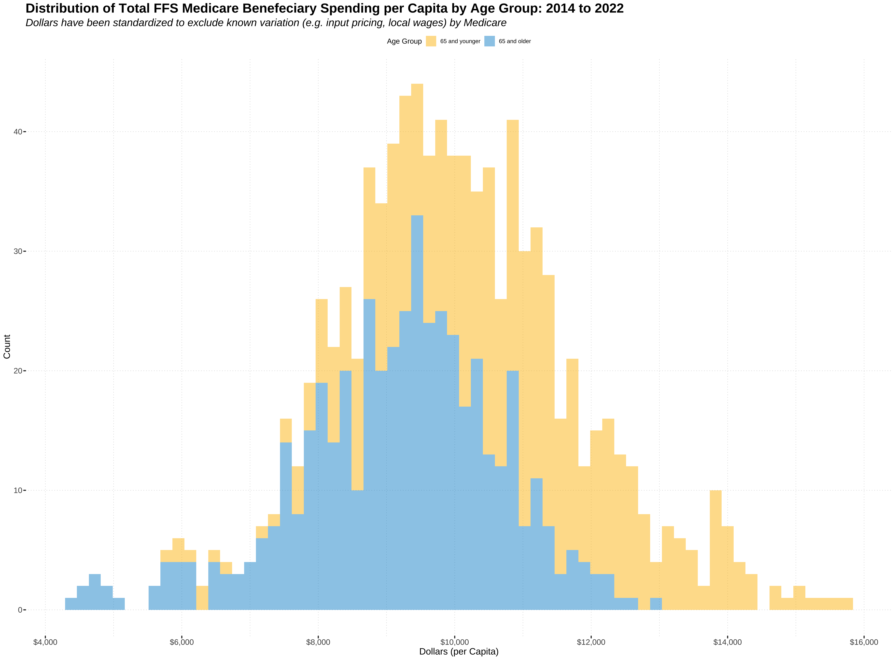
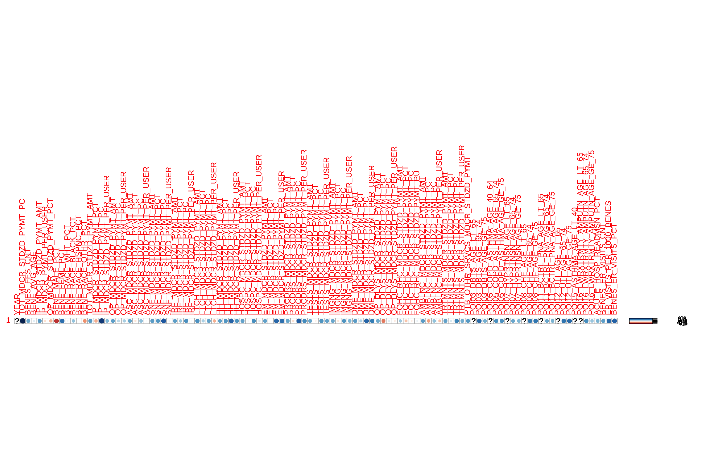

set.seed(123)
mydata[mydata == "*"] <- NA # * used as NAs/~0 cell values
for (i in 6:ncol(mydata)){
mydata[,i] <- as.numeric(mydata[,i])
}
mydata %<>% mutate(record_id = round(runif(dim(mydata)[1],100000,900000)), .before = YEAR)
#assign unique identifiers to each record
mydata %<>% mutate(record_id = as.character(record_id),
STATE = substr(BENE_GEO_DESC,1,2), .before = BENE_GEO_DESC)
waterfall <- mydata %>%
select(contains(c("record","YEAR","TOT_MDCR_STDZD_PYMT_PC",
"BENES_FFS_CNT","BENE_GEO_LVL","BENE_GEO_DESC","BENE_AGE_LVL",
"BENE_AVG_AGE","IP_MDCR_STDZD_PYMT_AMT","IP_MDCR_PYMT_PER_USER","OP_MDCR_STDZD_PYMT_PCT","OP_MDCR_STDZD_PER_USER","BENE_GEO_LVL","BENE_AGE_LVL","BENE_AVG_AGE","BENE_MALE_PCT","BENE_FEML_PCT","BENE_RACE",
"MDCR_STDZD_PYMT","PQI","HOSP_READMSN_PCT","ER_VISITS","BENES_ER"), ignore.case = TRUE))
waterfall %<>% mutate_if(is.character,as.factor)
# str(waterfall)
waterfall_national <- waterfall[waterfall$BENE_GEO_LVL == "National",]
waterfall_state <- waterfall[waterfall$BENE_GEO_LVL == "State",] #PQIs and 65 age split available
waterfall_county <- waterfall[waterfall$BENE_GEO_LVL == "County",] Identifying High-Need High Cost Patients within the Fee-For-Service Medicare Benefeciaries Population - Part 1
Abstract
Amount and quality of health services received vary substantially across different regions and subgroups within. The cause of this variation does not appear to be a result of differences in social-determinants, and estimates show that 33% of expenditures are unnecessary nor improve population health1. Moreover, in 2021, 5% of the population accounted for nearly half (48.4%) of total health expenditures in the United States2. High-Need High-Cost Patients have been the focus of utilization tracking by all stakeholders. There has been no formal definition to this population, but it is understood by most health experts that 1) they represent a small subset of the population and 2) disproportionately have higher spending than their counterparts. 3The ability to clearly define this subset of the population, observe their health needs, and analyze differences in utilization, spending, and quality of care across various factors and geographic regions can provide additional insight to US health expenditures, drive actionable change, and produce targeted initiatives. The Fee for Service Geographic Variation User File was created by the CMS in efforts to explain the underlying variation in resource use among Medicare beneficiaries across regions and physician practice patterns. It is foundational on CMS’ Chronic Conditions Data Warehouse (CCW), a data set containing 100% of Medicare beneficiaries’ enrolled in the fee-for-service claims as well as other enrollment types from 2014-2022. For this reason, it is acknowledged that this is census data. Therefore, generalizations in the form of hypothesis testing and statistical inferences are not used in this analysis. Any observable differences in the graphics or summary statistics have been concluded as differences in the population; standard error(s) measurements have been subsequently omitted.
Data Set
FFS GV PUF // CMS Chronic Conditions Data Warehouse (CCW)
Year: 2014 - 2022
Scope: The data set contains 100% of Medicare beneficiaries’ claim data for those enrolled in the fee-for-service program and other enrollment and eligibility data. This data is available at the national, state, and county level.
- The data scopes chronically ill beneficiaries and therefore includes explicit features such as unique identifiers for each beneficiary types to enable analysis on spending and utilization for individual beneficiaries over time. The granularity of this data set along with its unique features allows us to:
- Analyze differences in cost and utilization across different care settings and service lines.
- The care settings are inclusive of inpatient and outpatient hospitals, multiple post-acute care settings, hospice, physicians, laboratories, and suppliers of durable medical equipment.
Physician services are scoped and defined under the Restructured BETOS Classification System (RBCS) which groups services into these eight classifications: evaluation and management (E&M), procedures, treatments, imaging, laboratory tests, durable medical equipment (DME), anesthesia, and other.
The data scopes two types of quality measures and quantifies them in the form of utilization or by score
Quality measurements are given in utilization by 1) hospital admission rates for ambulatory care sensitive conditions, 2) hospital ED visits and 3) 30-day hospital readmission.
Quality measurements are also measured by PQI scores calculated by AHRQ. These are the ratio of total hospitalizations for a principal diagnosis given by the specified ICD-10-CM to the total population 18 and older in the metropolitan area of the patient’s residence4. Specific exclusion criteria for each quality indicator can be found here.
The data is scoped to exclude certain beneficiaries across all time periods to make further within/between group analysis easier, as whether or not individuals qualified or enrolled for Medicare change year over year. Criterion has been applied to those individuals to prevent bias and the same criterion is applied for all years across the scope of this data set. The exclusion criteria for those groups are defined below:
Beneficiaries who had both Part A and Part B coverage and were enrolled at any point during the year in a Medicare Advantage (MA) plan are excluded.
Beneficiaries who were enrolled in Part A only or Part B only were also excluded
The study population is subsequently defined as:
Study Population: The study population for the FFS GV PUF is comprised of individuals who have both Part A and Part B coverage and are fully enrolled in Medicare’s FFS program
- Additionally, all Medicare beneficiaries have been included in the data set but are not a part of the CMS’ intended study population. The beneficiaries in the data set are
- Total Medicare Beneficiaries
- Beneficiaries with Parts A and B
- FFS Study Population
- MA-Equivalent Study Population
- Both FFS and MA Enrollment
- Other (e.g., Part A only or Part B only)
- Beneficiaries in Study Population that Died during the Year
The FFS Study Population includes those that died during the calendar year as long as they do not follow the population exclusion criteria above.
Explicit Adjustments and Standardization
Standardization: Medicare spending and utilization can vary for reasons that are expected. Medicare reimbursement rates for the same service can vary to account for differences in local wages, input pricing, market conditions, and special payments5. Beneficiaries’ health status will also differ based on geographic location. Dollars (where standardized) in the data set have excluded this variability to make the analysis as interpretable as possible. Calculations for standardization methods can be found here and use the same methodology that CMS leverages to calculate per beneficiary spending (MSPB) for initiatives such as the hospital value-based purchasing program. Standardization methods still retain variability due to differences in practice care settings, physician tendencies, and differences in health status due to geographic location.
Average Risk Core: Forecasts FFS spending per beneficiaries compared to total Medicare spending, factoring age, sex, eligibility for Medicaid, and prior diagnoses. The risk adjustment model was developed by CMS which uses hierarchical condition categories (HCC). This analysis will be focused on patient population and will omit risk scores.
Payment Reduction (Years 2017-2022 only): To account for differences in spending after the fact (i.e deduction in base pay in provider by Medicare but later paid out to ACO) these variables were created: Total Population Based Payment Reduction Costs - the total payment reform amount that was not paid to the provider, but rather was paid to the ACO or PBP program Total Population Based Payment Reduction Costs Per Capita
Parameters
The parameters for each observation/row can be inferred by the column names. The data dictionary in conjunction with the user file documentation was used to interpret the definition of each parameter. The parameters describe spending, utilization, demographics, or quality measures at a certain level. That level is defined by BENE_GEO_LVL and can represent the total count, amount, standardized amount, standardized amount as a percent of actual, standardized amount per capita, or standardized amount per user for a specific parameter at the county, state, or national level. The totals at each level should sum to any aggregated geographic level. Depending on that level, some parameters may be limited/omitted by the CMS -
PQIs are not present at the county level
Age <65|65> split is not available at the county level
Utilization: CCW Claims data was used to calculate metrics on all-cause hospital readmission and ER use. They are generated for 17 major service categories (using claim type code, Medicare provider number for Part A services, bill types, claim type code and RBCS codes):
Total number of all-cause hospital readmissionsAll-cause hospital 30-day readmission rate(i.e., the number of readmission divided by the total number of admissions where the beneficiary was discharged alive)ER Visits
Utilization Types: 1) Number of times 2) Number of beneficiaries 3) Percentage of Beneficiaries measures are available for the following:
Number of covered days (Part A), Number of stays (Part A), Number of Episodes, Number of visits, Number of events (Part B)
The focus of this independent project is to explain the variability in TOT_MDCR_STDZD_PYMT_PC, total standardized medicare spending per capita, and use the explained variability to identify high-need high cost patients of the Fee-For-Service Medicare Beneficiaries study population. Medicare reimbursement rates for the same service can vary across regions over time due to local market conditions and inflation. The dollars in the response variable have been standardized to exclude this variability and other variables with the STDZD schema denotes this exclusion. Variability due to other factors are implicit within the data set.
Objective
Understand the relationship between the quality, use, and cost of health care
Examine issues related to the quality of care such as continuity and access to primary care.
Examine patterns in different types of care settings.
Identify high-need high cost individuals
Key Variables
Quality // PREVENTION QUALITY INITIATIVES (Volume/Scores)
ACUTE_HOSP_READMSN_PCT // BENES_ER_VISITS_PCT // ER_VISITS_PER_1000_BENES
PQI07_HYPRTNSN_AGE_LT_65: PQI07 Hypertension Admission Rate (age < 65)
PQI07_HYPRTNSN_AGE_65_74: PQI07 Hypertension Admission Rate (age 65‐74)
PQI07_HYPRTNSN_AGE_GE_75: PQI07 Hypertension Admission Rate (age 75+)
ACUTE_HOSP_READMSN_PCT: Hospital Readmission Rate
ER_VISITS_PER_1000_BENES: Emergency Depart ment Visits per 1,000 Beneficiaries
BENES_ER_VISITS_PCT: % of Beneficiaries with an ED Visit
Use // UTIIZATION
PRCDRS_MDCR_STDZD_PYMT_AMT: Procedures Standardized Medicare Payment PRCDRS_MDCR_STDZD_PYMT_PCT: Procedures Standardized Medicare Payment as % of Total Standardized Medicare Payment PRCDRS_MDCR_STDZD_PYMT_PC: Procedures Per Capita Standardized Medicare Payment PRCDRS_MDCR_STDZD_PYMT_PER_USER: Procedures Per User Standardized Medicare Payment BENES_PRCDRS_CNT: # Procedure Users BENES_PRCDRS_PCT: % of Beneficiaries Using Procedures PRCDR_EVNTS_PER_1000_BENES: Procedure Events Per 1,000 Beneficiaries
Cost // EXPENDITURES
TOT_MDCR_STDZD_PYMT_PC = Y
IP_MDCR_STDZD_PYMT_AMT
IP_MDCR_PYMT_PER_USER
OP_MDCR_STDZD_PYMT_PCTOP_MDCR_STDZD_PER_USER
Population // DEMOGRAPHIC
FFS Beneficiaries
BENE_GEO_LVL: National/State/County
BENE_AGE_LVL: <65;>=65
BENE_MALE_PCT: % Male
BENE_FEML_PCT: % Female
BENE_RACE_BLACK_PCT: % Black
BENE_AVG_AGE: Avg Age
*Variables names are not all inclusive and are shown as inferences to schema used throughout the project
Setup
Data Manipulation
Analysis
Fee For Service Medicare patients enrolled in both Part A and Part B for the calendar year is explicitly split by the CMS to separate age groups 65 and up from groups younger than 65, as these age groups inherently differ in health needs and subsequently exhibit different health utilization and spending patterns. It is important to note that these descriptions are not mutually exclusive; while high-need patients are also high-cost, the converse is not true6. Elder patients by nature require highly intensive care, but so can younger patients dealing with multiple short-term illnesses and acute injuries. The key distinction in this case is these patients may only be ‘high-need’ momentarily if proper treatment and diagnostics results in a stable state - resulting in a small proportion of overall utilization and spending. Characteristics of HNHC patients are identifiable and are loosely defined by experts as individuals with higher out of pocket expenses, multiple chronic conditions, and functional limitations. Due to the complexity of the HNHC population and limitation of this data set to Medicare beneficiaries, providing an exact definition is not practical. However, HNHC patients within the FFS Medicare population can still be identified, in which the results can be utilized to inform findings in other population groups, leading to a more robust definition of who these patients are.
Consequentially, Medicare spending has steadily increased nationally year over year for both age groups, a total increase of 21.6% by 2022.7 During that same period, beneficiaries younger than 65 spent a total of $1560 per capita more on average (total sd = $814). While the distribution of both groups form a Gaussian distribution, beneficiaries younger than 65 exhibit higher cost per capita and variability.
waterfall %>%
group_by(BENE_AGE_LVL, YEAR) %>%
filter(BENE_AGE_LVL %in% c("<65",">=65"),
BENE_GEO_LVL == "National") %>%
summarize(n = mean(TOT_MDCR_STDZD_PYMT_PC)) %>%
pivot_wider(names_from = YEAR, values_from = n)# A tibble: 2 × 10
# Groups: BENE_AGE_LVL [2]
BENE_AGE_LVL `2014` `2015` `2016` `2017` `2018` `2019` `2020` `2021` `2022`
<fct> <dbl> <dbl> <dbl> <dbl> <dbl> <dbl> <dbl> <dbl> <dbl>
1 <65 10079. 10372. 10653 10954. 11491. 11937. 11801. 12178. 12276.
2 >=65 9002. 9266. 9312. 9527. 9843. 10151. 9647. 10493. 10941.# table for spending YoY
waterfall %>%
dplyr::filter(BENE_AGE_LVL %in% c("<65",">=65"),
BENE_GEO_LVL == "National") %>%
group_by(BENE_AGE_LVL) %>%
select(BENE_AGE_LVL,TOT_MDCR_STDZD_PYMT_PC) %>%
skim() | Name | Piped data |
| Number of rows | 18 |
| Number of columns | 2 |
| _______________________ | |
| Column type frequency: | |
| numeric | 1 |
| ________________________ | |
| Group variables | BENE_AGE_LVL |
Variable type: numeric
| skim_variable | BENE_AGE_LVL | n_missing | complete_rate | mean | sd | p0 | p25 | p50 | p75 | p100 | hist |
|---|---|---|---|---|---|---|---|---|---|---|---|
| TOT_MDCR_STDZD_PYMT_PC | <65 | 0 | 1 | 11304.51 | 814.48 | 10078.6 | 10653.00 | 11491.25 | 11937.44 | 12275.82 | ▅▅▁▅▇ |
| TOT_MDCR_STDZD_PYMT_PC | >=65 | 0 | 1 | 9797.83 | 628.88 | 9001.8 | 9311.68 | 9646.57 | 10150.65 | 10940.61 | ▇▅▅▂▂ |
lessR::SummaryStats(TOT_MDCR_STDZD_PYMT_PC, by = BENE_AGE_LVL, data = waterfall[waterfall$BENE_GEO_LVL=="National",])TOT_MDCR_STDZD_PYMT_PC
- by levels of -
BENE_AGE_LVL
n miss mean sd skew krts min qrt1 mdn qrt3 max IQR
<65 9 0 11304.506 814.479 -0.300 -1.587 10078.600 10653.000 11491.250 11937.440 12275.820 1284.440
>=65 9 0 9797.834 628.884 0.697 -0.295 9001.800 9311.680 9646.570 10150.650 10940.610 838.970
All 9 0 10015.889 619.793 0.496 -0.618 9190.600 9532.680 9931.220 10403.810 11087.430 871.130
No (Box plot) outliers 

FFS Beneficiaries younger than 65 would potentially be considered ‘higher cost’ than those older, but to acknowledge the delineation of the terms and the ultimate goal of identifying high-need high-cost patients, the process of identifying such would take two logical progressions:
Identify subgroups that exhibit extremities/outliers in spending, then identify extremities/outliers in utilization
Identify subgroups that exhibit extremities/outliers in utilization, then identify extremities/outliers in spending
Both approaches were examined to determine the more efficient and practical method. Subgroups that are high-need of services for mental health, rehabilitation, substance-use, etc. may likely spend less than those in need of multiple physician services for evasive surgeries or complex health issues. The proceeding methodology is a performance of both methods separately. The results will then be utilized to determine the prevalence of observable trends within groups and help identify the HNHC of the patient population. Beginning with the first method, observations outside of three z scores from the mean were used as a proxy to define extremities in spending. Observations outside 1.75x the interquartile range were defined as outliers. After quantifying proxies, the subset of observations to isolate were outlined. To maintain the accuracy of conclusions, comparisons were only made for observations that occurred within the same year. Exploratory data analysis on the state or county level data have its respective benefits. While county level data allows for the most granularity, the county level data does not contain PQIs nor differentiates between groups older/younger than 65. To realize both of these benefits, a waterfall approach was used, starting with the sub population 65 and older in 2022 at the State level. Comparisons within groups younger than 65 during the same year were then made. Lastly, both groups aggregated at the county level were analyzed.
Group 1 - FFS Benefeciaries 65 and older in 2022 (state level comparisons)
Correlation coefficients were obtained for total standardized dollars per capita. Values were deemed practically significant for correlation coefficients larger than .70 (i.e. if the variable alone can be predictive of more than 50% of total variability in spending).
# starting with State level data in 2022 for age groups 65 and older
# μ1 = 10941
waterfall_means <- data.frame(variable=rep(NA,107))
waterfall_means$variable <-
waterfall %>%
filter(BENE_AGE_LVL==">=65",BENE_GEO_LVL=="State",YEAR=="2022") %>%
select(where(is.numeric)) %>%
variable.names()
waterfall_means$under_65 <- colMeans(waterfall %>%
filter(BENE_AGE_LVL==">=65",BENE_GEO_LVL=="State",YEAR=="2022") %>%
select(where(is.numeric)), na.rm = TRUE)
waterfall_means$over_65 <- colMeans(waterfall %>%
filter(BENE_AGE_LVL==">=65",BENE_GEO_LVL=="State",YEAR=="2022") %>%
select(where(is.numeric)), na.rm = TRUE)waterfall_state %<>% filter(BENE_AGE_LVL==">=65",BENE_GEO_LVL=="State",YEAR=="2022") %>%
select(where(is.numeric))
cor(waterfall_state$TOT_MDCR_STDZD_PYMT_PC,y = waterfall_state, method = "pearson", use = "pairwise.complete.obs") %>%
corrplot::corrplot() #corrplot 
group1_cor_table <-
cor(y = waterfall_state$TOT_MDCR_STDZD_PYMT_PC, waterfall_state, method = "pearson", use = "pairwise.complete.obs") %>%
data.frame()
group1_cor_table$name <- rownames(group1_cor_table)
rownames(group1_cor_table) <- rep(NULL,107)
names(group1_cor_table) <- c("cor_","name")
group1_cor_table %<>% mutate(name_ = name, .before = 1)
group1_cor_table <- group1_cor_table[,c(1:2)]
group1_cor_table %>%
tibble() %>%
arrange(desc(cor_)) %>%
print(n=5) #correlation table# A tibble: 107 × 2
name_ cor_
<chr> <dbl>
1 TOT_MDCR_STDZD_PYMT_PC 1
2 IP_MDCR_STDZD_PYMT_PC 0.889
3 SNF_MDCR_STDZD_PYMT_PC 0.760
4 PRCDRS_MDCR_STDZD_PYMT_PC 0.732
5 BENES_ER_VISITS_PCT 0.727
# ℹ 102 more rowsInpatient standardized dollars were highly correlated (r = .889), resulting in 79.03% of total variability in per capita spending that could be attributed to inpatient spending. Although this variation is likely a characteristic of elder groups, inpatient hospital care only accounted for 36% of spending for the noninstitutional population in the top 5% of the nation’s spending distribution in 20188. FFS Medicare payment for skilled nursing facility, home health, and durable medical equipment were significant factors in total spending, implying the potential presence of underlying colinearity between the elder population and the utilization of intensive health services. The use of multidimensional health services combined with the strong relationship for both the percentage of beneficiaries with at least one ER visit, and payments for services in the procedures category, may suggest that Medicare beneficiaries 65 and older exhibit multiple chronic conditions simultaneously that require careful coordinated care over an extended period of time. To test the validity of this, further analysis must be completed for number and percent of beneficiaries using different types of services and their associated PQI score.
The values were then normalized by subtracting each observation from its group mean, and then dividing the resulting value from its group standard deviation. The 1.75x the IQR were used as outliers for total Medicare spending per capita, and was calculated to be any observation excluding the range between [-2.244357, 2.340497]. Extremes were any observations where total Medicare spending per capita were +/- three z scores from the mean. For observations in spending that were identified, the extreme z scores for other parameters were compared to analyze observable similarities or differences. For this part of the comparison, only extreme values were isolated. For each successive sub population group, group means and standard deviations are recalculated based on the sequential subset of data.
waterfall_scaled <-
mydata %>%
filter(BENE_AGE_LVL %in% c(">=65"),
BENE_GEO_LVL=="State",
YEAR == "2022") %>%
select(contains(c("record_id","STATE","TOT_MDCR_STDZD_PYMT_PC", "BENE_GEO_DESC",
"STDZD_PYMT_PER_USER","STDZD_PYMT_PC","PQI","PER_1000_BENES","BENES_ER_VISITS_PCT","ER_VISITS_PER_1000_BENES"),
ignore.case = TRUE)) %>%
mutate_if(is.numeric, scale.default)
outlier <- function(x){
lb <- quantile(x, probs = .25, na.rm = TRUE)-(1.75*IQR(x, na.rm =TRUE))
ub <- quantile(x, probs = .75, na.rm = TRUE)+(1.75*IQR(x, na.rm = TRUE))
sprintf("Range Excluding [%f, %f]",lb,ub)
}
outlier(waterfall_scaled$TOT_MDCR_STDZD_PYMT_PC)[1] "Range Excluding [-2.244357, 2.340497]"waterfall_scaled %>%
#filter(TOT_MDCR_STDZD_PYMT_PC <= -3 | TOT_MDCR_STDZD_PYMT_PC >= 3) %>% #extremes
filter(TOT_MDCR_STDZD_PYMT_PC <= -2.244357 | TOT_MDCR_STDZD_PYMT_PC >= 2.340497) %>%
tibble()# A tibble: 2 × 101
record_id STATE TOT_MDCR_STDZD_PYMT_PC[…¹ BENE_GEO_DESC IP_MDCR_STDZD_PYMT_P…²
<chr> <chr> <dbl> <chr> <dbl>
1 123227 PR -2.77 PR -3.58
2 113478 VI -3.33 VI -0.672
# ℹ abbreviated names: ¹TOT_MDCR_STDZD_PYMT_PC[,1],
# ²IP_MDCR_STDZD_PYMT_PER_USER[,1]
# ℹ 96 more variables: OP_MDCR_STDZD_PYMT_PER_USER <dbl[,1]>,
# ASC_MDCR_STDZD_PYMT_PER_USER <dbl[,1]>,
# SNF_MDCR_STDZD_PYMT_PER_USER <dbl[,1]>,
# IRF_MDCR_STDZD_PYMT_PER_USER <dbl[,1]>,
# LTCH_MDCR_STDZD_PYMT_PER_USER <dbl[,1]>, …mydata %>%
filter(record_id == "113478") %>%
tibble()# A tibble: 1 × 249
record_id YEAR BENE_GEO_LVL STATE BENE_GEO_DESC BENE_GEO_CD BENE_AGE_LVL
<chr> <dbl> <chr> <chr> <chr> <chr> <chr>
1 113478 2022 State VI VI <NA> >=65
# ℹ 242 more variables: BENES_TOTAL_CNT <dbl>, BENES_WTH_PTAPTB_CNT <dbl>,
# BENES_FFS_CNT <dbl>, BENES_MA_CNT <dbl>, MA_PRTCPTN_RATE <dbl>,
# BENE_AVG_AGE <dbl>, BENE_FEML_PCT <dbl>, BENE_MALE_PCT <dbl>,
# BENE_RACE_WHT_PCT <dbl>, BENE_RACE_BLACK_PCT <dbl>,
# BENE_RACE_HSPNC_PCT <dbl>, BENE_RACE_OTHR_PCT <dbl>, BENE_DUAL_PCT <dbl>,
# BENE_AVG_RISK_SCRE <dbl>, TOT_MDCR_PYMT_AMT <dbl>,
# TOT_MDCR_STDZD_PYMT_AMT <dbl>, TOT_MDCR_PYMT_PC <dbl>, …extremes <- data.frame(record_id = NA, variable = NA)
# for (j in seq_along(waterfall_scaled)) { #identify extreme characteristics
# col_name <- colnames(waterfall_scaled)[j]
# for (i in seq_len(nrow(waterfall_scaled))) {
# if (!is.na(waterfall_scaled[i,j]) && (waterfall_scaled[i,j] >= 3 || waterfall_scaled[i,j] <= -3)){
# print(col_name)
# print(waterfall_scaled$record_id[i])
# extremes <- rbind(extremes, data.frame(variable = col_name, record_id = waterfall_scaled$record_id[i]))
# }
# }
# }
# extremes %<>% filter(variable != "record_id")
# rm(extremes)
#TX, AK, FL, CATotal Medicare per capita spending for FFS Beneficiaries 65 and older in Puerto Rico were significantly lower in comparison to the national average. This group exhibited a significantly low percentage of beneficiaries who had at least one Emergency Department visit during that year. Payment for skilled nursing facility services as a percent of total was extremely low, as was the per user payment for inpatient services. On the higher end of spending and utilization, we see this group exhibits significantly higher Medicare payments for outpatient dialysis, imaging, and tests as a percentage of total Medicare spending. Virginia beneficiaries followed a similar trend with low volumes in ED visits and events in the DME category, while exhibiting higher ambulatory care and dialysis spending. The direction and correlations established above are maintained within this subgroup, highlighting the substantial effect that emergency, skilled nursing, and inpatient services has on total Medicare spending per capita. The significantly high utilization and spending for outpatient dialysis, imaging, and testing, and the observed negative relationship it has on per capita spending for this subgroup implies the existence of underlying patterns that may be attributed to this sub population’s tendency to seek services for preventive care measures, unarguably known to reduce the risk for diseases, disabilities, and death9.
Citations
Footnotes
“Eliminating Waste in US Healthcare,” by Donald M. Berwick and Andrew D. Hackbarth, 2012↩︎
Concentration of Healthcare Expenditures and Selected Characteristics of Persons with High Expenses, United States Civilian Noninstitutionalized Population, 2018-2021, meps.ahrq.gov/data_files/publications/st556/stat556.shtml#:~:text=Persons%20in%20the%20top%205%20percent%20expenditure%20tier%20accounted%20for,97.2)%20of%20total%20healthcare%20expenses. Accessed 16 July 2024. ↩︎
National Academies of Sciences, Engineering, and Medicine; Health and Medicine Division; Board on Population Health and Public Health Practice; Committee on Community-Based Solutions to Promote Health Equity in the United States; Baciu A, Negussie Y, Geller A, et al., editors. Communities in Action: Pathways to Health Equity. Washington (DC): National Academies Press (US); 2017 Jan 11. 2, The State of Health Disparities in the United States. Available from: https://www.ncbi.nlm.nih.gov/books/NBK425844/↩︎
AHRQ Quality IndicatorsTM (AHRQ QITM) ICD-10-CM/PCS Specification v2022↩︎
Super N. The Geography of Medicare: Explaining Differences in Payment and Costs [Internet]. Washington (DC): National Health Policy Forum; 2003 Jul 3. (Issue Brief, No. 792.) Available from: https://www.ncbi.nlm.nih.gov/books/NBK559778/↩︎
National Academy of Medicine; The Learning Health System Series; Whicher D, Dahlberg ML, Apton KL, et al., editors. Effective Care for High-Need Patients: Opportunities for Improving Outcomes, Value, and Health. Washington (DC): National Academies Press (US); 2017. 2, KEY CHARACTERISTICS OF HIGH-NEED PATIENTS.↩︎
Percent increase is relative to data set: 2014-2022↩︎
Mitchell, E. M. Concentration of Healthcare Expenditures and Selected Characteristics of Persons with High Expenses, U.S. Civilian Noninstitutionalized Population, 2018. Statistical Brief #533. January 2021. Agency for Healthcare Research and Quality, Rockville, MD.
http://www.meps.ahrq.gov/mepsweb/data_files/publications/st533/stat533.shtml↩︎Borksy, A., et al. (2018). Few Americans Receive All High-Priority, Appropriate Clinical Preventive Services. Health Affairs, 37(6). DOI: 10.1377/hlthaff.2017.1248↩︎